他からの目線が気にならない、 約22帖のルーフバルコニー
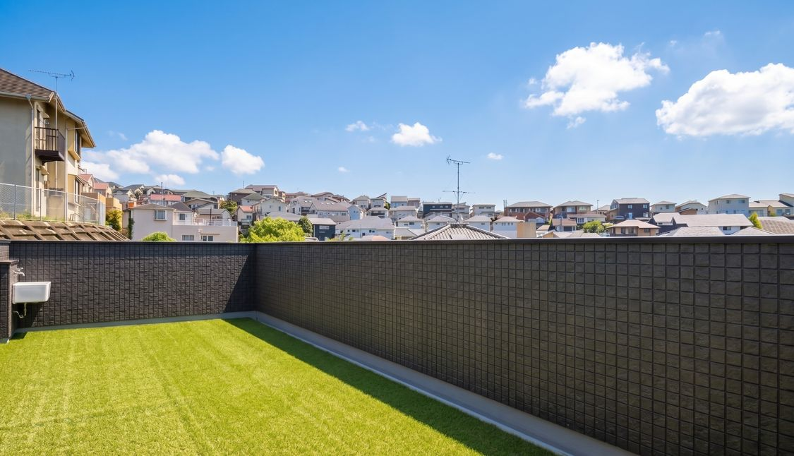
22帖もの広さがある特別な外空間。
ガーデンファニチャーやBBQ用品、
大型プールを並べるゆとりがあり、
都会にいながら日常的にお子様が
アウトドア体験を楽しめます。
道具の清掃や水入れに便利な
水栓も完備しています。
- バルコニー面積
- 22帖
- 乗用車
- 約3台分（駐車スペース換算）
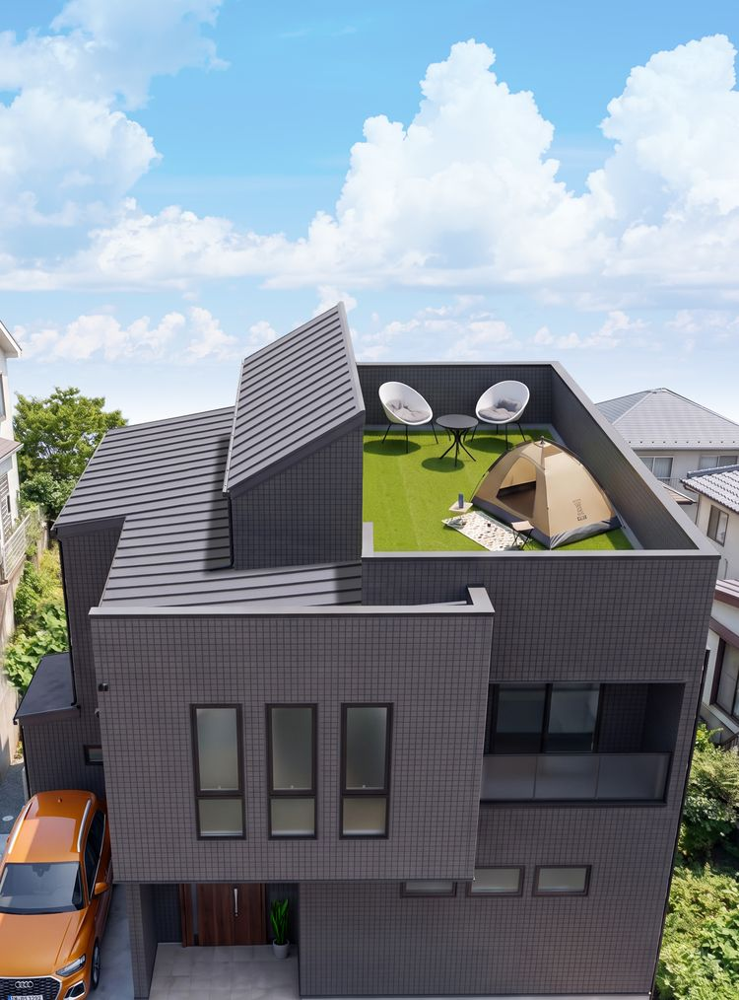
横浜市港北区菊名
モデルハウス完成見学会
菊名に誕生した、延床面積143.77㎡の家。
都心にいながら周りを気にせず過ごせる
屋上と、光あふれる吹き抜けがあります。
住宅街の中でも、空を広く感じられる
住まいです。上質な時間が増えるほど、
家族の笑顔も増えていく。
そんな暮らしが、ここから始まります。
【期間限定･完全予約制】
利便性の高い東急東横線・横浜線 菊名駅から
徒歩6分という好立地にありながら、
プライベートな屋上と光あふれる吹き抜けが、
都心にはない上質な暮らしを叶えます。
FEATURE 01
土地の制約が多い都心でありながら、この家には
屋上・セカンドリビング・水まわりという
3つの外空間があります。
それぞれの空に、それぞれの心地よさを。

22帖もの広さがある特別な外空間。
ガーデンファニチャーやBBQ用品、
大型プールを並べるゆとりがあり、
都会にいながら日常的にお子様が
アウトドア体験を楽しめます。
道具の清掃や水入れに便利な
水栓も完備しています。
L字リビングからバルコニーへ視線が抜け、
面積以上の開放感を演出する設計です。
光や緑を感じられる室内空間に加え、
キッチンから近い屋根付き
セカンドリビングとして、
雨の日も快適に外空間を楽しめます。
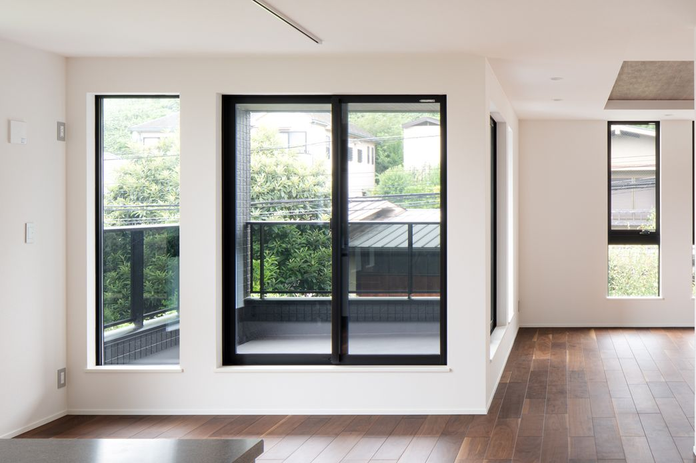
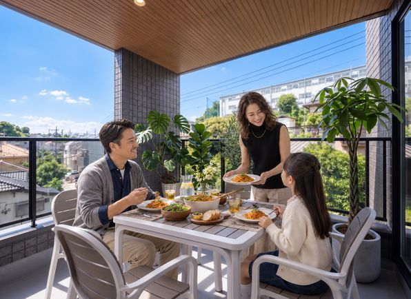
キッチンやパントリーから直結し、
生ゴミなど匂うゴミを外で一時保管できます。
家庭菜園で収穫したハーブも
すぐ調理に活かせます。
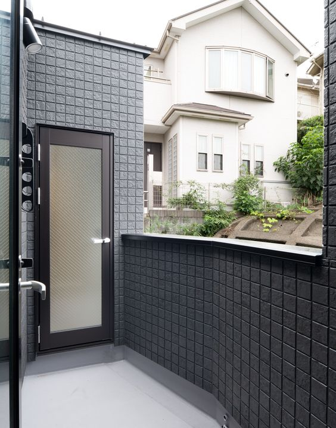
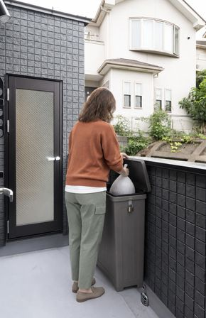
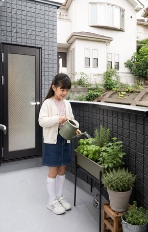
FEATURE 02
1階から最上階を貫く鉄骨階段。
吹き抜けの光が家中に広がり、
開放的な一体感を生み出します。
床暖房も備え、デザイン性と機能性を
兼ね備えた家のシンボルです。
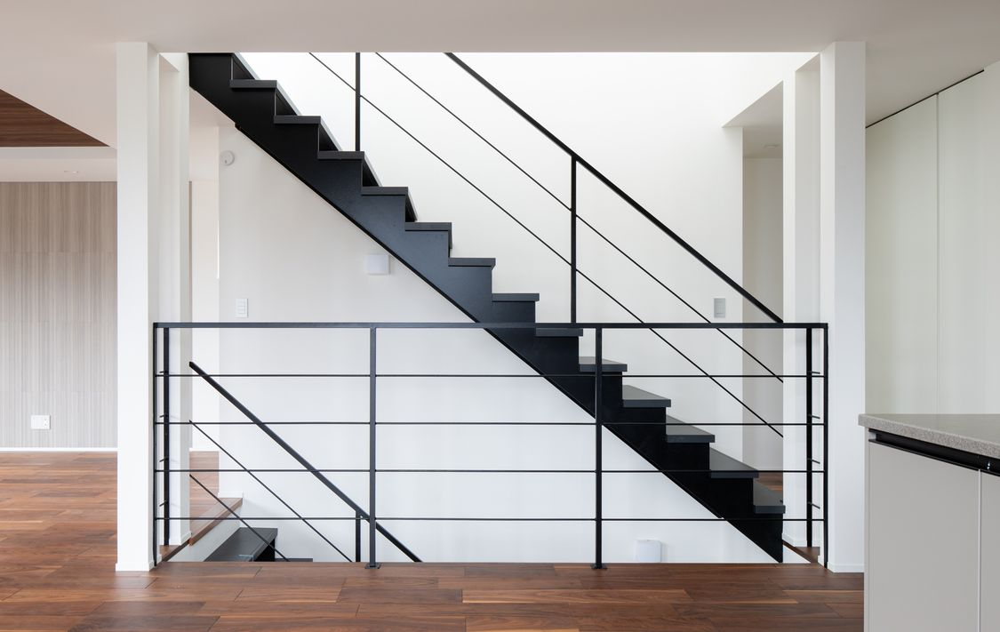
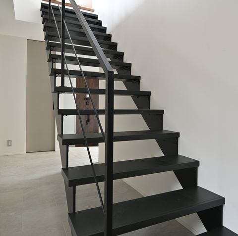
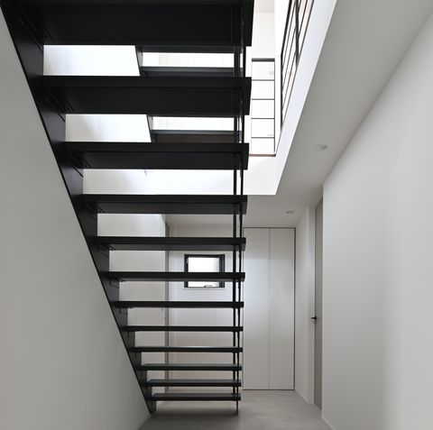
FEATURE 03
3帖分のパントリーや主寝室のWICをはじめ、
部屋の用途に合わせて計画配置。
家族が靴を脱げる玄関収納など、
「必要な場所に必要な分」を
設計することで、来客時もすっきり保てる
片付けやすさを実現しています。
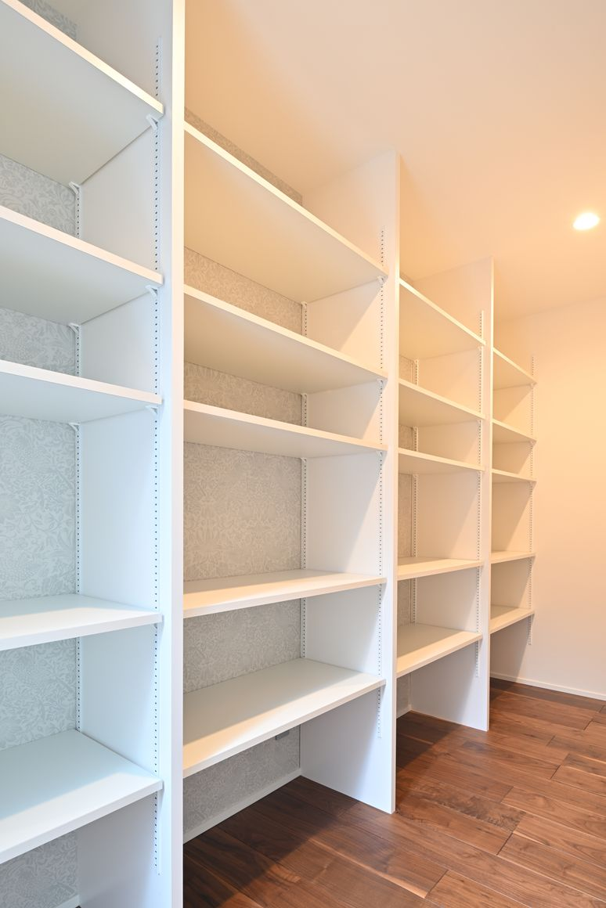
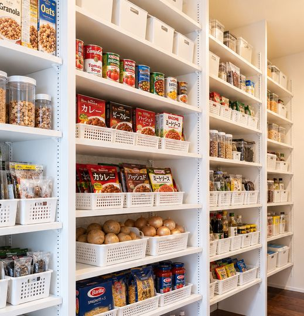
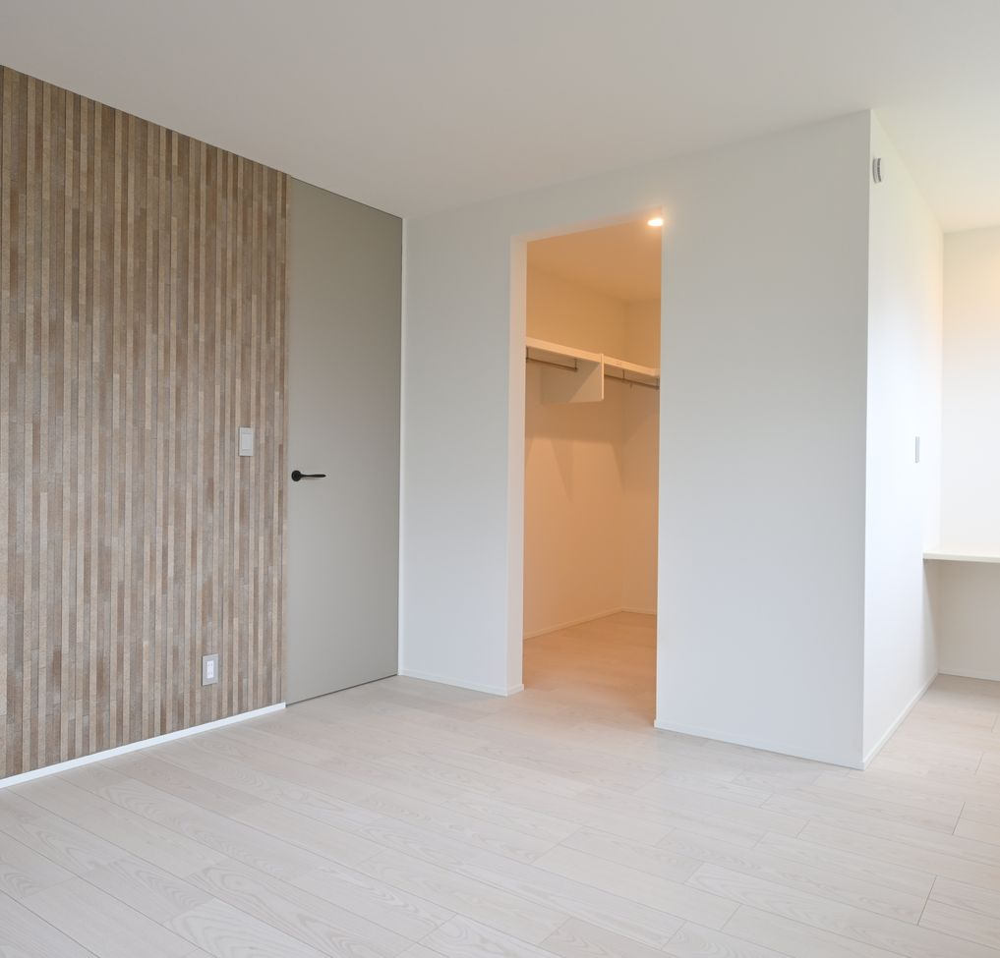
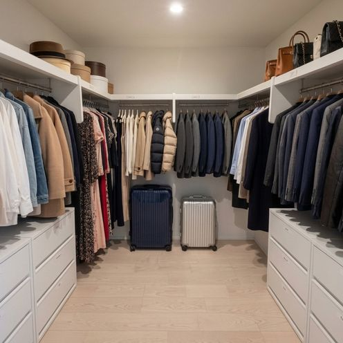
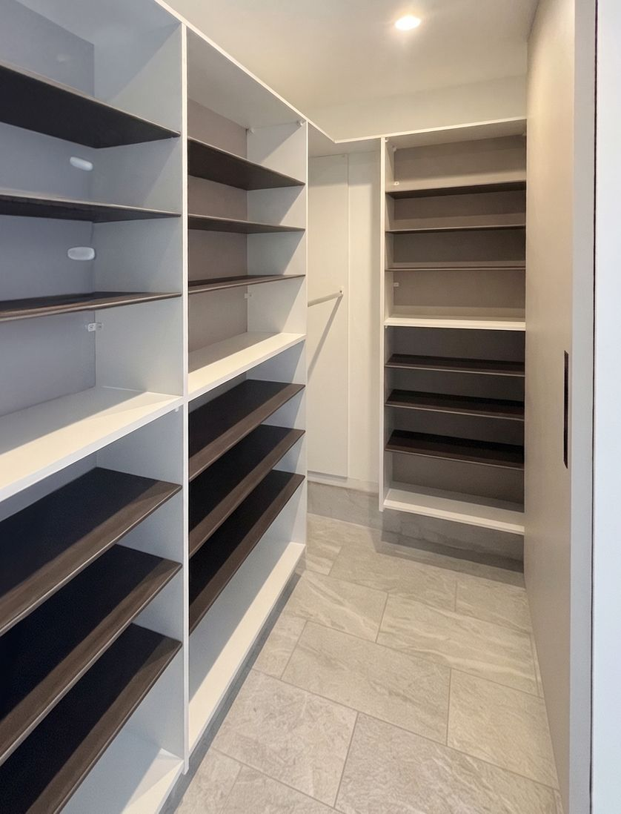
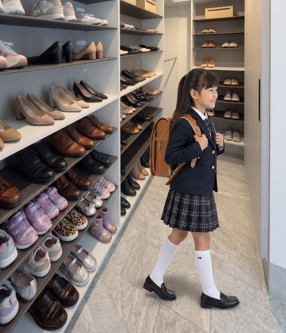
一般的な洗面台の2倍の広さの1500mm、
3面鏡
＋ 1面鏡でホテルライクな大型仕様。
朝の忙しい
時間帯でも、大人2人が余裕で
並んで使えます。
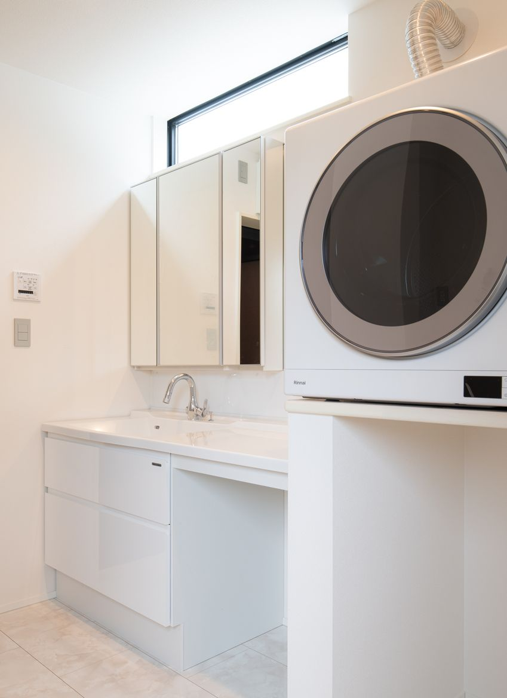
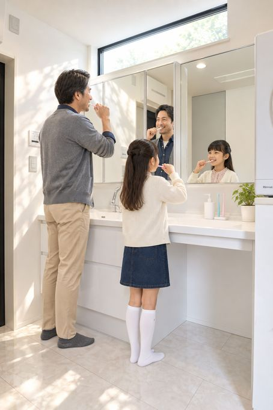
Why don't you try it out?
実際に立って、広さを体感してみてください。
現地だからこそ、具体的なイメージが湧いてきます。
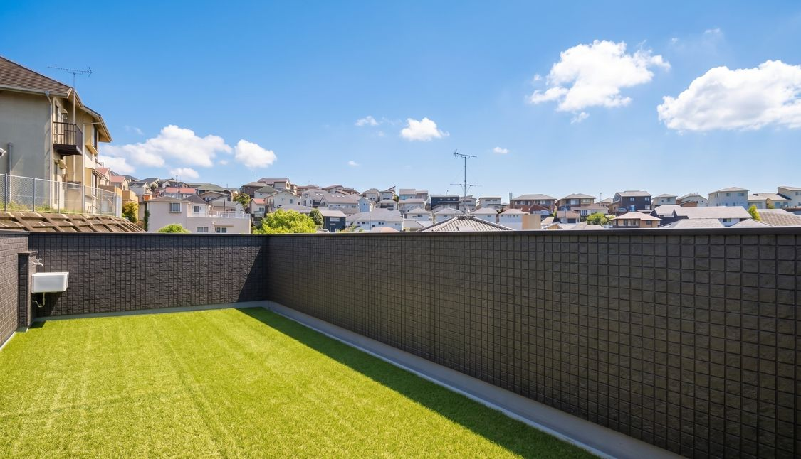
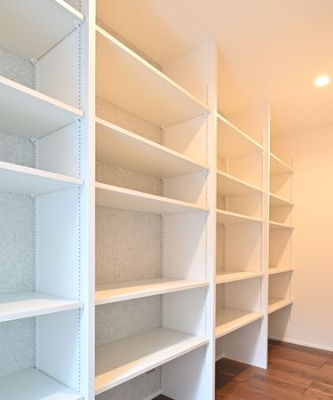
パントリー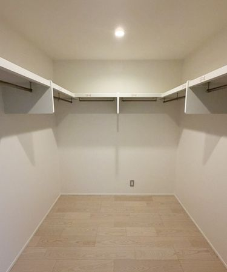
ウォークインクローゼット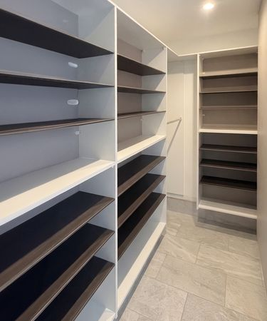
シューズインクローゼット住まい全体にゆとりをもたらす、頼もしい収納空間です。
＼この物件を手がけたプリンシパルホームとは？／
町田で始まり、22年。
地域に根ざした家づくりを続け、
数多くのご家族の夢を形にしてきました。
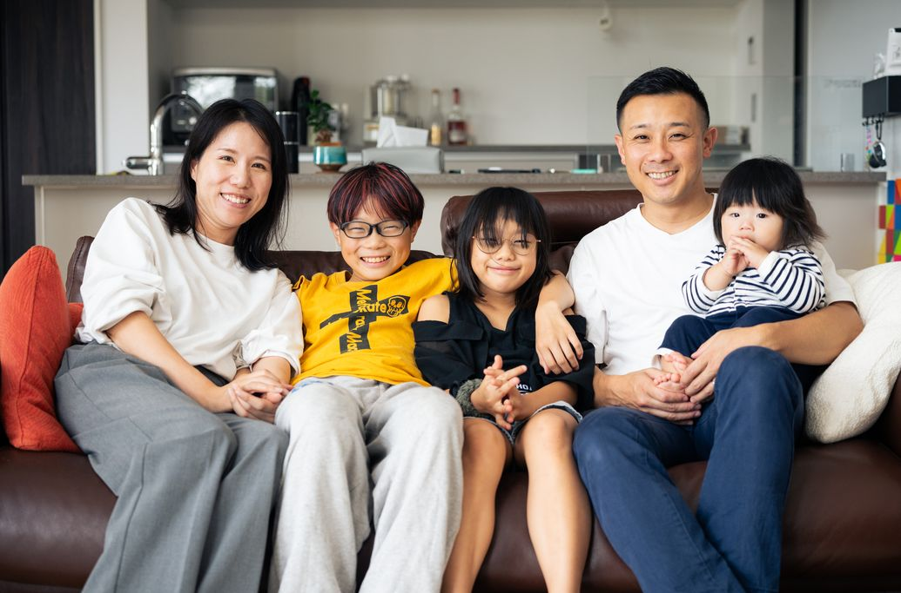
見た目の美しさだけでなく、
生活動線や住み心地の良さが、
国内･海外の厳しい審査で認められています。
グッドデザイン賞（2024年）/キッズデザイン賞（2024年）/
ジャーマンデザインアワード（2025年）/など、
国内外の権威あるデザイン賞を多数受賞しています。
この暮らしやすさが実現できる理由
広さや便利さは、偶然生まれるものでは
ありません。日々の暮らしの中にある
小さな不便に気づき、突き詰めることで、
暮らしに"心のゆとり"を生み出す。
それが、プリンシパルホームの設計力です。
都心でも自由度の高いバルコニーと、
暮らしやすさを追求した設計力・技術力で、
プリンシパルホームが安心の家づくりを叶えます。
モデルハウスの間取りや動線を参考に、
お客様に合わせた最適なプランもご提案します。
ご相談やご質問はお気軽にお問い合わせください
0120-021-541 受付時間｜9：30-18：00（火・水曜日定休）注文住宅に関するお問い合わせはこちら
お問合せ 資料請求見学・ご相談すべて無料です
完成見学会を予約するDETAILS
【期間限定･完全予約制】
現地完成見学会開催
※土地探し相談：ご予約時にご希望をお聞かせ頂ければ
未公開土地情報の提供も可能です
FLOW
＼初めての方でも安心／
ご予約から当日までは、シンプルな3ステップです。
本ページの「見学予約ボタン」から、ご希望の日時を選択して送信してください。24時間いつでも受け付けております。
お申込み内容を確認後、3営業日以内に担当スタッフよりお電話またはメールにてご連絡を差し上げます。この際、当日の詳細な集合場所や、お車でお越しの方には駐車スペースのご案内も併せて行います。これにて予約完了です！
※火曜・水曜は定休日となります。
所要時間：約60～90分
当日は現地（菊名）へ直接お越しください。スタッフが同行し物件をご案内します。疑問点や家づくりのご相談など、何でもお気軽にお話しください。
見学・ご相談すべて無料です
完成見学会を予約するQ&A
「気になるけれど、まだ予約は早いかな？」と
迷われている方へ。
皆さまからよくいただくご質問にお答えします。
いいえ、見学・ご相談はすべて無料です。現地でのご案内はもちろん、家づくりのご相談についても一切費用はかかりません。「まずは実物を見てみたい」という気軽な気持ちで、安心してお越しください。
本見学会は完全予約制となっております。プロのスタッフが丁寧にご案内できるよう、枠数を絞って開催しております。事前のご予約をお願いいたします。
前日まで、WEBサイトより受け付けております。枠が埋まり次第終了となりますので、特に連休中のご見学をご希望の場合は、お早めの確保をおすすめいたします。当日の場合は0120-021-541までご連絡下さい。
おおよそ60分～90分ほどです。「サッと見たい」「設備について詳しく聞きたい」など、お客様のご都合に合わせて調整可能ですので、当日スタッフにお気軽にお申し付けください。
もちろんです！ぜひご家族でお越しください。スタッフもしっかりサポートいたしますので、安心してお連れください。
はい、お車でお越しいただけます。現地に駐車スペースをご用意しております。
はい、およそ徒歩6分です。駅近ならではのアクセスの良さを、ぜひ歩いて確かめてみてください。
もちろんです！大歓迎でございます。具体的なプランがなくても、インスピレーションを膨らませる場としてご活用ください。
ご安心ください。強引な勧誘やしつこいお電話は一切いたしません。あくまでお客様のペースで、楽しみながらご覧いただくことを大切にしています。
見学・ご相談すべて無料です
完成見学会を予約するABOUT US
株式会社 プリンシパルホーム
東京・神奈川エリアで22年以上、
累計2,000棟を超える実績。
狭い土地に広い家を実現する
「弊社独自の体積設計」で、
数多くのご家族の夢を形にしてきました。